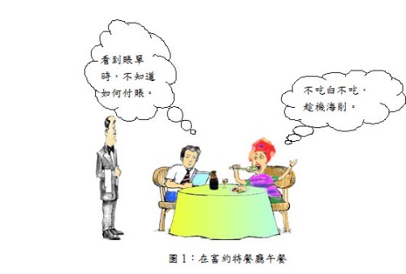

午餐 原作者：毛姆 譯者：江銘輝

我在看歌舞劇表演時，瞧見她，她也向我打招呼。中場換幕休息時，我走過去坐在她的身邊。自從上次與她見面，已經過了很久，如果不是別人談起她的名字，我簡直認不出來就是她。她很高興和我交談。
“呵，多年不見了，時光飛馳！我們都已不再年輕了。你還記不記得我第一次與你相遇的事情？你請我吃午餐。”
我會忘記嗎？
那是二十年前的事了，我住在巴黎拉丁區一間狹小的公寓裡，公寓正對著一個公墓，我的收入僅能糊口。她拜讀我的一本書，來信與我討論，我回信感謝她。不久，我又收到她的來信，說她正好會經過巴黎，希望與我聊聊。但因受到時間的限制，僅下星期四的短暫片刻有空。那天早上她會在盧森堡公園，問我是否願意請她在富約特餐廳吃一頓簡單的午餐？富約特餐廳是法國參議員們常去的地方，消費遠遠超過我負擔的能力，我從來沒有想過要去那裡。但是，我當時有些受寵若驚，並且我還太年輕，以至於尚未學會如何向女人說「不」。（我可以補充一句話嗎？男人除非年紀大到每句話都不會對女孩子有任何影響時，很少人會向女人說「不」。）我當時有80法郎（金法郎），還能維持到月底，一頓普通的午餐應該不會超過15法郎的。我把下兩個星期的咖啡錢省下來，應該足夠應付了。
我回信表示願意與我的通信朋友星期四中午12點半在富約特見面。她並沒有我想像的那麼年輕，派頭很大但並不迷人。事實上她已經40歲出頭了（一個迷人的年齡，可惜不會讓人看了頓生激情，一見鍾情）。她給我的印象是牙齒很多又白又大又整齊，而且好像比實際需要的還多。她很健談，且既然似乎喜歡談論我，我只好準備當一個忠誠的聽眾了。
菜單遞來時，我吃了一驚，因為價格比我預期的還高出許多。但是她再三向我保證：“我午餐從來不吃任何東西的”，她說。
“哦，別這麼說！”我裝作慷慨的樣子回答著。
“我從未吃超過一樣東西，我覺得現在人們吃得太多了。或許，一點點魚就夠了。不知他們有沒有鮭魚？”
喲，今年這個時候離鮭魚上市季節還很早，所以菜單上價格尚未列出，但我還是問了侍者，是否有鮭魚。有，剛進了一條美麗的鮭魚，這是今年購進的第一條。我為我的客人點了它。侍者又問：正在烹煮的時刻，她要不要來點其他的東西。
“不用了，”她回答，“我向來只吃一樣東西，除非你這裡有魚子醬。我不介意來點魚子醬。”
我的心不由沉落一下。我知道我付不起魚子醬的價錢，但是卻說不出口。我告訴侍者無論如何一定要上魚子醬，我自己只點菜單上最便宜的一道菜，羊排。
“我覺得你吃肉是不明智的，”她說，“我不知道吃了羊排這樣油膩的東西之後，你還希望繼續工作嗎？我是不喜歡讓我的胃負擔過重。”
緊接著酒的問題來了。
“午餐時我不喝任何東西，”她說。
“我也不喝，”我趕緊說。
“除了白葡萄酒，”她繼續地說，好像我什麼都沒說。
“這些法國白葡萄酒口味很淡，對消化有神奇幫助。”
“那你要什麼？”我問，雖然仍舊表示好客，但已經不那麼殷勤了。
她朝我露出閃亮的白牙齒，溫和地對我笑著說。
“我的醫生除了香檳外，什麼都不准我喝。”
我覺得我的臉變得有點白。我叫了半瓶香檳。若無其事的說，我的醫生嚴禁我喝香檳。
“那你喝什麼？”
“水吧。”
她吃著魚子醬和鮭魚，愉快地談論著藝術、文學和音樂。但是我卻擔心著賬單不知道要付多少。在等我的羊排送來的時候，她以非常嚴肅的口氣教訓我。
“看來你習慣午餐吃得比較油膩，這肯定是錯誤地。為什麼不學學我，就只吃一樣東西呢？我保證你會覺得比以前更好。”
“我將只吃一樣東西，”當侍者又拿著菜單走過來時，我這樣說。
她優雅地打了個手勢讓他走到一邊。
“不，不，我午餐從來不吃任何東西。僅只一口，決對不多，而且我吃那麼一點，不是為別的，只是有交談的藉口罷了。我不可能再吃任何食物，除非他們有那種大蘆筍。如果沒有吃到那種大蘆筍就離開巴黎，我會感到非常遺憾的。”
我的心往下沉，我曾經在商店看過這種蘆筍，知道它的價錢貴得很驚人，使我望著它流涎不已。
“夫人想知道你們是否有那種大蘆筍？”我問侍者。
我竭力希望他說沒有。侍者寬大、牧師般的臉上露出開心的微笑。他向我保證他們有那樣巨大的、鮮豔的、柔嫩的，另人驚奇的蘆筍。
“我一點也不餓，”我的客人歎了一口氣，“但是如果你堅持，我也不介意來點蘆筍。”
我點了蘆筍。
“你不來點嗎？”
“不，我從來不吃蘆筍。”
“我知道有些人不喜歡蘆筍。其實，你的味覺被你吃的肉毀掉了。”
我們等候蘆筍的烹調。恐懼一直盤據我，現在已經不是我可剩多少錢過完這個月的問題，而是我是否有足夠的錢可結賬。如果結賬時發現差了10法郎，非向我的客人借錢的話，我可做不出這種事。我知道自己真正有多少錢。我打定主意，如果賬單上的錢超過，我就把手往口袋裡一伸，然後戲劇性地開始大叫錢包被扒走了。當然，如果她也沒有足夠的錢來付賬的話，那會很尷尬。那麼唯一的辦法是將我的手錶留下，然後說我會回來付賬。
蘆筍端來了，巨大、多汁又開胃。黃油融化的味道刺激我的鼻孔，像虔誠猶太人祭品的香味鑽入耶和華的鼻孔一樣。眼望著那貪饞的女人大口大口的將蘆筍塞進咽喉，而我以禮貌性的口氣談論著巴爾幹各國的戲劇狀況。最後，她總算吃完了。
“咖啡？”我說。
“好的，只來一客冰淇淋和一杯咖啡，”她說。
現在我不再理會賬單了，因此我給自己叫了咖啡並且給她點了冰淇淋和咖啡。
“你知道吧，有一件事我是絕對相信的，“她一邊吃著冰淇淋一邊說，“一個人吃完一餐時，總應感到還能再吃一些。”
“你還餓嗎？”我有氣無力的問。
“哦，不，我不餓；你看，我是不吃午餐。我每天早晨喝一杯咖啡，然後接下來就是晚餐，午餐時我向來只吃一點。我正遊說你這樣作。”
“哦，我明白！”
接著，可怕的事情發生了。當我們等咖啡的時候，領班滿臉虛偽，帶著討好的笑容，拿著滿滿一大籃巨桃朝我們走過來。那些桃子顏色紅得像是純潔少女臉上的粉紅；充滿著義大利風景的豔麗色彩。但是確信，現在還不是桃子生產的季節，天曉得它值多少錢？但不久，我也知道了，因為我的這位客人，一邊繼續著她的談話，一邊心不在焉地拿起一個。
“你看，你胃裡塞滿了肉，”--可憐的我那一小塊羊排-- “吃不下更多的東西了。但我只吃了一些點心，所以我可再享受一個桃子。”
賬單來了，我發現剩下的錢連付小費都很勉強。她瞄一下我留給侍者的三法郎小費。我知道她覺得我小氣。但是當我走出餐廳時，面臨的是未來還有一整月我口袋裡連一個辨士也沒有。
“你要向我學習，” 當她跟我握手時，說，“午餐不要吃多於一種。”
“我會做得比這個更好，”我回敬道，“今天晚餐我將不吃任何東西。”
“幽默家，”她開心地叫道，跳進一輛計程車，“你真是一位幽默家！”
但是最後我還是報仇了。我自信不是報復心很強的人，但是，如果連上帝對這件事情也幫忙的話，我以心滿意足的心情來看這個結果，也是可以原諒的了。因為今天她的體重肯定有21石（註：294磅，約133公斤）。*
*石是英制重量單位，1英石相當於14英磅。
The Luncheon（原文）
I caught sight of her at the play and in answer to her beckoning I went over during the interval and sat down beside her. It was long since I had last seen her and if someone had not mentioned her name, I hardly think I would have recognized her. She addressed me brightly.
“Well, its many years since we first met. How time does fly! We’re none of us getting any younger. Do you remember the first time I saw you? You asked me to luncheon.” Did I remember?
It was twenty years ago and I was living in Paris. I had a tiny apartment in the Latin Quarter overlooking a cemetery and I was earning barely enough money to keep body and soul together. She had read a book of mine and had written to me about it. I answered, thanking her, and presently I received from her another letter saying she was passing through Paris and would like to have a chat with me; but her time was limited and the only free moment she had was on the following Thursday; she was spending the morning at the Luxembourg and would I give her a little luncheon at Foyot’s afterwards? Foyot’s is a restaurant at which the French senators eat and it was so far beyond my means that I had never even thought of going there. But I was flattered and I was too young to have learned to say no to a woman. (Few men, I may add, learn this until they are too old to make it of any consequence to a woman what they say.) I had eighty francs (gold francs) to last me the rest of the month and a modest luncheon should not cost more than fifteen. If I cut out coffee for the next two weeks I could manage well enough.
I answered that I would meet my friend—by correspondence—at Foyot’s on Thursday at half-past twelve. She was not so young as I expected and in appearance imposing rather than attractive. She was in fact a woman of forty (a charming age, but not one that excites a sudden and devastating passion at first sight), and she gave me the impression of having more teeth, white and large and even, than were necessary for any practical purpose. She was ‘ talkative, but since she seemed inclined to talk about me I was prepared to be an attentive listener.
I was startled when the bill of fare was brought, for, the prices were a great deal higher than I had anticipated. But she reassured me. “I never eat anything for luncheon”, she said.
“Oh, don’t say that!” I answered generously.
“I never eat more than one thing. I think people eat far too much nowadays. A little fish, perhaps. I wonder if they have any salmon.”
Well, it was early in the year for salmon and it was not on the bill of fare, but I asked the waiter if there was, any. Yes, a beautiful salmon had just come in, it was the first they had had. I ordered it for my guest.The waiter asked her if she would have something while it was being cooked. “No”, she answered, “I never eat more than one thing, unless you had a little caviare. I never mind caviare.”
My heart sank a little. I knew I could not afford caviare, but I could not very well tell her that. I told the waiter by all means to bring caviare. For myself I chose the cheapest dish on the menu and that was a mutton chop.
“I think you’re unwise to eat meat,” she said. “I don’t know how you can expect to work after eating heavy things like chops. I don’t believe in overloading my stomach.”
Then came the question of drink.
“I never drink anything for luncheon,” she said.
“Neither do I,” I answered promptly.
“Except white wine,” she proceeded as though I had not spoken. “These French white wines are so light. They’re wonderful for the digestion.”
“What would you like?” I asked, hospitable still, but not exactly effusive. She gave me a bright and amicable flash of her white teeth.
“My doctor won’t let me drink anything but champagne.”
I fancy I turned a trifle pale. I ordered half a bottle. I mentioned casually that my doctor had absolutely forbidden me to drink champagne.
“What are you going to drink, then?”
“Water.”
She ate the caviare and she ate the salmon. She talked gaily of art and literature and music. But I wondered what the bill would come to. When my mutton chop arrived she took me quite seriously to task.
“I see that you’re in the habit of eating a heavy luncheon. I’m sure it’s a mistake. Why don’t you follow my example and just eat one thing? I’m sure you’d feel ever so much better for it.”
“I am only going to eat one thing,” I said as the waiter came again with the bill of fare.
She waved him aside with an airy gesture.
“No, no, I never eat anything for luncheon. Just a bite, I never want more than that, and I eat that more as an excuse for conversation than anything else. I couldn’t possibly eat anything more—unless they had some of those giant asparagus. I should be sorry to leave Paris without having some of them.”
My heart sank. I had seen them in the shops and I knew that they were horribly expensive. My mouth had often watered at the sight of them.
“Madame wants to know if you have any of those giant asparagus,” I asked the waiter.
I tried with all my might to will him to say no. A happy smile spread over his broad, priest-like face, and he assured me that they had some so large, so splendid, so tender, that it was a marvel.
“I’m not in the least hungry,” my guest sighed, “but if you insist I don’t mind having some asparagus.” I ordered them.
“Aren’t you going to have any?” “No, I never eat asparagus.”
“I know there are people who don’t like them. The fact is, you ruin your palate by all the meat you eat.”
We waited for the asparagus to be cooked. Panic seized me. It was not a question now how much money I should have left over for the rest of the month, but whether I had enough to pay the bill. It would be mortifying to find myself ten francs short and be obliged to borrow from my guest. I could not bring myself to do that. I knew exactly how much I had and if the bill came to more I made up my mind that I would put my hand in my pocket and with a dramatic cry start up and say it had been picked. Of course it would be awkward if she had not money enough either to pay the bill. Then the only thing would be to leave my watch and say I would come back and pay later.
The asparagus appeared. They were enormous, succulent and appetising. The smell of the melted butter tickled my nostrils as the nostrils of Jehovah were tickled by the burned offerings of the virtuous Semites. I watched the abandoned woman thrust them down her throat in large voluptuous mouthful and in my polite way I discoursed on the condition of the drama in the Balkans. At last she finished.
“Coffee?” I said.
“Yes, just an ice-cream and coffee,” she answered.
I was past caring now, so I ordered coffee for myself and an ice-cream and coffee for her.
“You know, there’s one thing I thoroughly believe in”, she said, as she ate the ice-cream. “One should always get up from a meal feeling one could eat a little more.”
“Are you still hungry?” I asked faintly.
“Oh, no, I’m not hungry, you see, I don’t eat luncheon. I have a cup of coffee in the morning and then dinner, but I never eat more than one thing for luncheon. I was speaking for you.”
“Oh, I see”
Then a terrible thing happened. While we were waiting for the coffee, the head waiter, with an ingratiating smile on his false face, came up to us bearing a large basket full of huge peaches. They had the blush of an innocent girl; they had the rich tone of an Italian landscape. But surely peaches were not in season then? Lord knew what they cost. I knew too—a little later, for my guest, going on with her conversation, absentmindedly took one.
“You see, you’ve filled your stomach with a lot of meat”—my one miserable little chop—”and you can’t eat 30 any more. But I’ve just had a snack and I shall enjoy a peach.”
The bill came and when I paid it I found that I had only enough for a quite inadequate tip. Her eyes rested for an instant on the three francs I left for the waiter and I knew that she thought me mean. But when I walked out of the restaurant I had the whole month before me and not a penny in my pocket.
“Follow my example,” she said as we shook hands, “and never eat more than one thing for luncheon.”
“I’ll do better than that,” I retorted, “I’ll eat nothing for dinner to-night.”
“Humorist!” she cried gaily, jumping into a cab. “You’re quite a humorist!”
But I have had my revenge at last. I do not believe that I am a vindictive man, but when the immortal gods take a hand in the matter it is pardonable to observe the result with complacency. Today she weighs twenty-one stone.